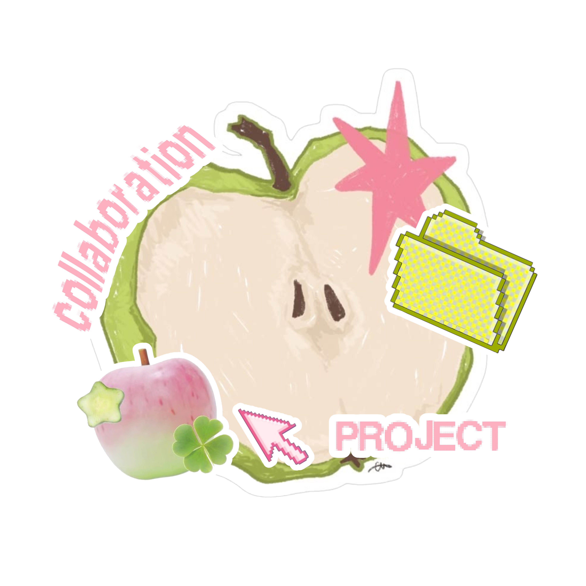

COLLABORATION PROJECT · 2026
SMKN TENGARAN · KELOMPOK 12 X PPLG 3
A SCRAP
BECOMES
A SPARK.
Casing PC bekas bisa punya nilai guna?
Melihat kembali barang yang dianggap tak berguna dan menemukan kemungkinan baru di dalamnya.
Jelajahi proyek
SECONDCHANCE REDUCE · REUSE · RECYCLE
PROYEK KOLABORASI
SCROLL TO EXPLORE ↓
01 / THE IDEA
Limbah
Harus Ditangani.
Proyek ini berangkat dari kepedulian terhadap limbah rumah tangga dan limbah elektronik. Casing PC, botol plastik, kardus, batok kelapa, serta bahan sisa lainnya masih memiliki potensi untuk dimanfaatkan kembali.
Melalui kreativitas dan kolaborasi, material sisa diubah menjadi produk yang memiliki fungsi, nilai estetika, dan nilai ekonomis.
Pelajari latar belakangnya dan materinya02 / SUBJECTS
MATA
PELAJARAN
KOLABORASI.
Mata pelajaran yang terhubung dalam proyek kolaborasi ini.
03 / OUR CREATION
A SCRAPS.
CAN HAVE NEW PURPOSE.
Lihat semua karya ↗
04 / OUR TEAM
THE PEOPLE
BEHIND THE SPARK.
Kelompok 12 · X PPLG 3 · SMKN Tengaran

Bagus Aditya